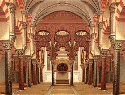

Cordoba ciudad patrimonio
Mezquita-catedral de Córdoba,antes «Santa María Madre de Dios» o «Gran Mezquita de Córdoba», actualmente conocida como la Catedral de la Asunción de Nuestra Señora de forma eclesiástica, es un edificio de la ciudad de Córdoba, España.
